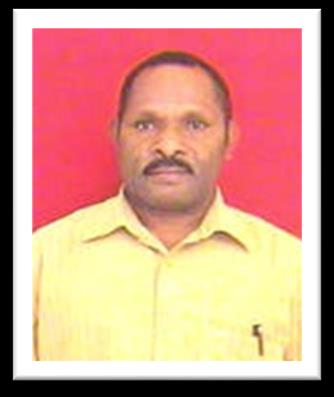
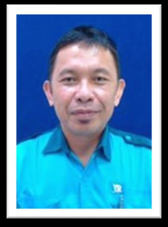

Kontraktor Putra Daerah Papua
Konstruksi, pemeliharaan fasilitas & bangunan, penyediaan tenaga kerja dan perdagangan umum — dengan mutu yang berkualitas.
5 Mei 2006
2006
CV. Yawi Raya resmi menjadi PT. Yawiraya Bina Mandiri
Berawal dari inkubator bisnis Social Local Development (SLD) PT. Freeport Indonesia pada tahun 1996.
 Scaffolder Bersertifikat
Scaffolder Bersertifikat
 Budaya K3
Budaya K3
Visi Kami
Menjadi salah satu Perusahaan Kontraktor Putra Daerah Papua terbaik dan menghasilkan Tenaga Kerja berskala Nasional, lebih khusus Tenaga Kerja lokal Papua yang berkualitas dan berhasil guna — bergerak di bidang Jasa Konstruksi, perawatan bangunan & Jasa pemasok Tenaga Kerja.

YBM Impact
Tenaga Kerja Terlatih
184
Personel ahli, bersertifikat & manpower lapangan
Pengalaman
Melayani perusahaan swasta & pemerintah lokal sejak 1996
30+ tahun
Scaffolding
Set perancah Galvanix dalam kondisi baik
600 set
Layanan YBM
Empat unit usaha utama yang kami kerjakan untuk mendukung operasional mitra di area dataran rendah (lowland) hingga dataran tinggi (highland).
 01
01Contractors
Konstruksi jalan, jembatan, gedung, drainase, pemeliharaan fasilitas & proyek pengelasan.
 02
02Labour Supplier
Tenaga konstruksi & underground: mason, carpenter, welder, rigger, miner, operator alat berat.
 03
03Proyek Conveyor
Penggantian roller, pulley, gear box, chute liner, re-lagging & belt splices.
04General Supplier
Produk 3M: APD, respirator, fall protection, alat ukur kebisingan & kualitas udara.
Proyek
Terpilih
Dari scaffolding & pengecatan di Tembagapura, carpenter & mason di Kuala Kencana, hingga labor supply underground.
Scaffolding & Painting
Barrack BQ Garden, Tembagapura

Carpenter & Mason
Baliho Atrium persiapan PON XX, Kuala Kencana

Labor Supplier
IPHMC — Industrial Public Health Malaria Control

Rental Bus
Facilities Management Kuala Kencana (RW-A & RW-B)
Tim Pimpinan

Sekinus Murib
Pemilik & Pendiri
Yance Murib
Komisaris

Herman R. Pai
General Manager / PJO
Siap mendukung proyek Anda di Papua.
Konsultasikan kebutuhan konstruksi, tenaga kerja, rental unit, maupun supply peralatan K3.